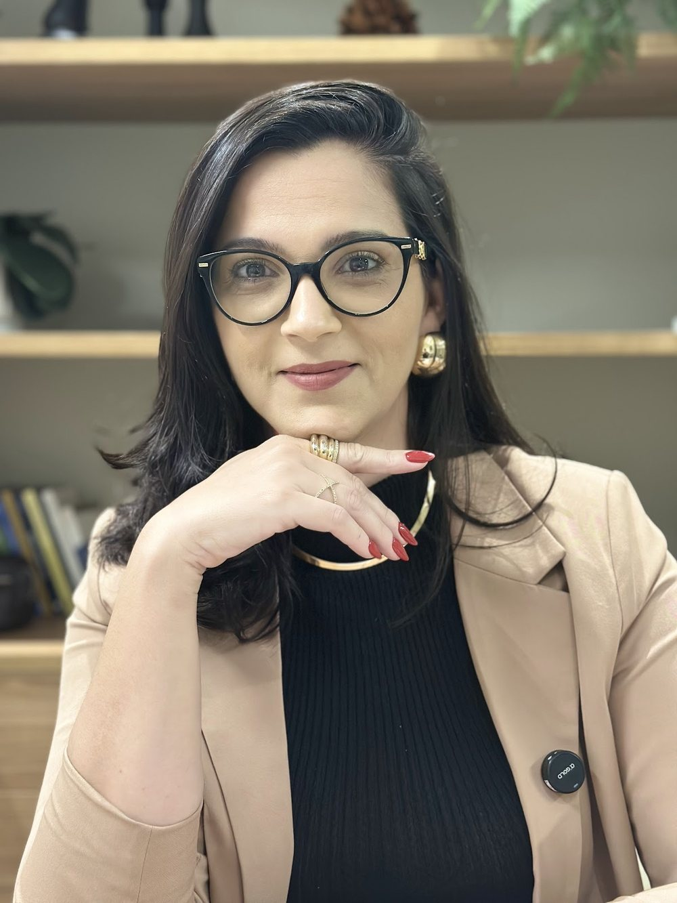
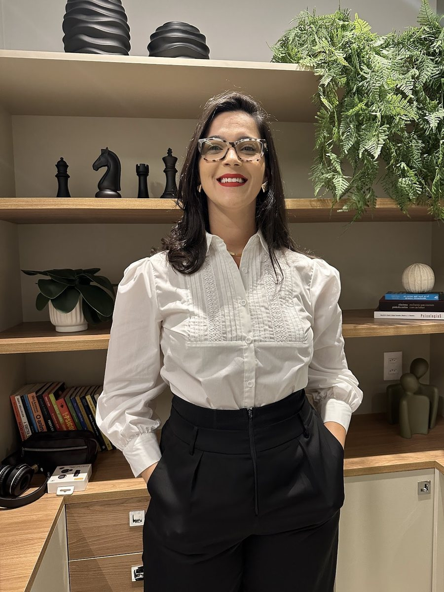

Início · Sobre
Tallyne Luz Menezes, advogada.
OAB/BA 40.462. Formada pela Universidade do Estado da Bahia em 2012, à frente do próprio escritório desde 2018. Cada informação desta página traz a fonte.
Registro
Formação e registro

Bacharel em Direito pela Universidade do Estado da Bahia (UNEB). No LinkedIn: “Sou Tallyne Menezes, advogada formada pela Universidade do Estado da Bahia desde 2012…”.
Ver o perfil no LinkedInCarreira
Trajetória
- 2012Bacharelado em Direito
Universidade do Estado da Bahia (UNEB).
Fonte: LinkedIn - 2014Advocacia cível e do consumidor
Cerqueira e Castro, em Conceição da Feira (2014–2015).
Fonte: LinkedIn - 2015Figueirêdo Advogados e Consultores
De 2015 a 2017, na área cível e de consumidor.
Fonte: LinkedIn - 2017Sampaio e Ribeiro Advogados Associados
De 2017 a 2018, na mesma área.
Fonte: LinkedIn - 2018O próprio escritório
À frente do escritório de advocacia que leva o nome dela desde janeiro de 2018.
Fonte: LinkedIn - 2021Sociedade individual de advocacia
Tallyne Menezes I Sociedade Individual de Advocacia, aberta em 20/04/2021.
Fonte: Receita Federal
Em todos os escritórios anteriores, a área registrada no LinkedIn é a mesma: “Cível e Consumidor”.
Hoje
O escritório

- Marca: Tallyne Menezes Advocacia.
- Sociedade: Tallyne Menezes I Sociedade Individual de Advocacia, aberta em 20/04/2021, com a Dra. Tallyne como titular.
- Endereço: Edifício Boulevard Side Empresarial, Rua Ewerton Visco, 290, sala 1901, Caminho das Árvores, Salvador.
- Atuação: advocacia para empresas, contratos (inclusive imobiliários), direito do consumidor e direito cível.
Na voz dela
Como ela fala
“Todo negócio exige energia. Energia para começar, para sustentar, para inovar e, principalmente, para continuar quando os resultados ainda não apareceram. Mas existe uma energia que faz toda a diferença: a energia do dono.”Legenda dela no Instagram · ver o post
“Participar do Postura de Dona e falar sobre estratégias empresariais para mulheres empresárias foi uma experiência muito especial. Porque empreender não é sobre dar conta de tudo sozinha. É sobre saber liderar, delegar e construir uma estrutura que permita crescer sem carregar o negócio inteiro nas costas.”
Legenda dela no Instagram, sobre a palestra Postura de Dona · ver o postTransparência
Como conferir
- Inscrição na OAB/BA: Cadastro Nacional dos Advogados (CNA) e pauta pública da 5ª Câmara Cível do TJBA, que registra “TALLYNE LUZ MENEZES (BA 40462)”.
- Sociedade individual de advocacia: cadastro na Receita Federal.
- Formação e trajetória: perfil no LinkedIn.
- Publicações: Instagram @tallynemenezes.adv e Linktree.
Dúvidas frequentes
Perguntas comuns
Qual é o registro da Dra. Tallyne?
OAB/BA 40.462, na seccional da Bahia da Ordem dos Advogados do Brasil.
Desde quando ela advoga?
Ela se formou pela UNEB em 2012 e aparece no LinkedIn atuando em escritórios desde 2014; o escritório próprio é de janeiro de 2018.
Quem atende no escritório?
A Tallyne Menezes Advocacia é uma sociedade individual de advocacia, com a Dra. Tallyne como titular.
Fale com o escritório
Uma conversa de alinhamento, com hora marcada.
Edifício Boulevard Side Empresarial, sala 1901, Caminho das Árvores, Salvador. Mensagens pelo WhatsApp (71) 99100-7874.